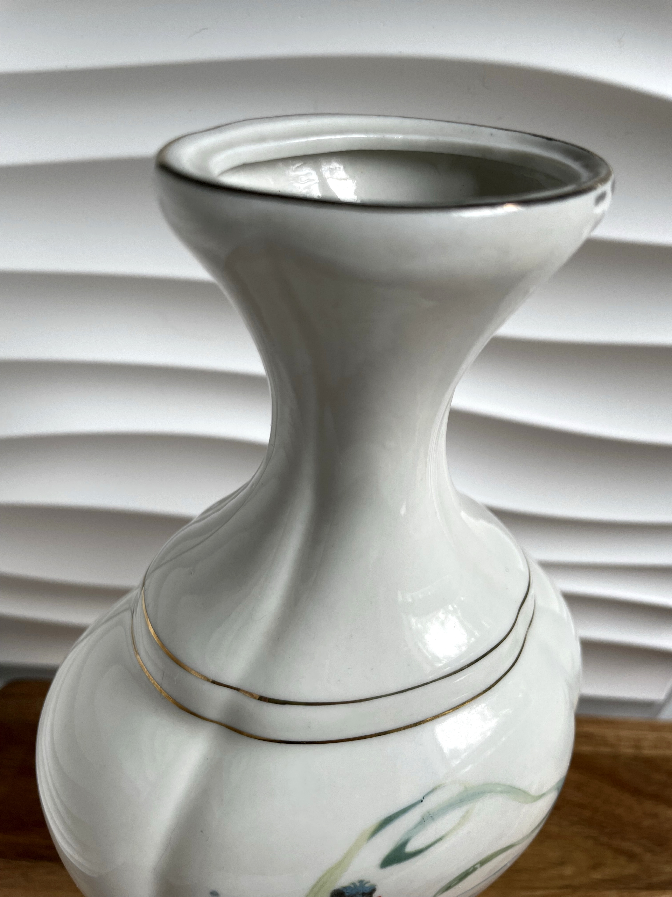
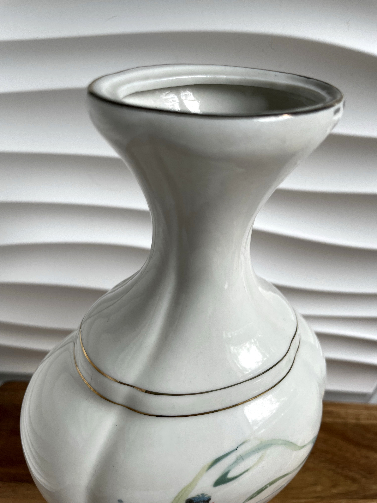

A charming vintage Chinese porcelain vase, delicately decorated with
hand-painted motifs. This collectible piece showcases traditional craftsmanship
and elegance, making it a refined addition to any home.
Height: 17 cm Width: 12 cm Condition: Good, with two visible chips (see photos).
Vintage Chinese Sake Cup Set (8 pieces)
€85.00
A delightful vintage Chinese sake cup set, comprising eight finely
crafted porcelain cups. Each cup is richly decorated with traditional
hand-painted motifs in vibrant colors, presented in its original red silk-lined box.
A perfect collectible for lovers of Chinese artistry and tea ceremonies.
Dimensions (per cup): 5 cm diameter Condition: Excellent, no chips or cracks, box shows minor age-related wear.

 
